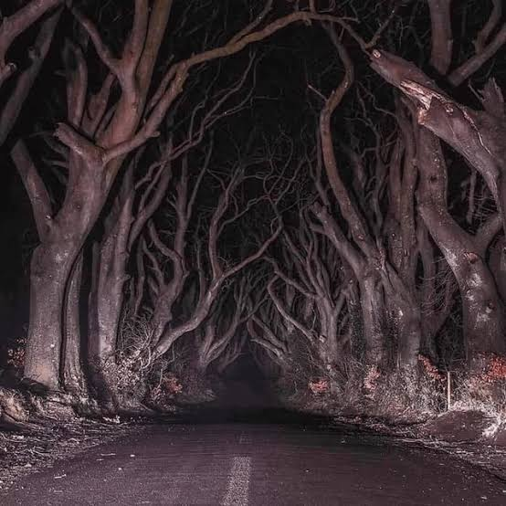

In a tiny village in Ireland, there was a road nobody walked on after midnight on Halloween.
The locals called it The Devil’s Road.
Every Halloween, people locked their doors before midnight and put salt across their windowsills.
Nobody explained why. One Halloween night, a 16-year-old boy named Sean laughed at the old tradition. “Ghosts aren't real,” he told his friends. To prove it, Sean walked down the Devil’s Road alone at 12:01 a.m.
The road was completely silent. No wind. No crickets. Nothing. Then Sean heard footsteps behind him.
Tap…
Tap…
Tap…
He turned around fear in his eyes.
Nobody was there. He kept walking. Then he heard a little girl's voice. “Sean…” He stopped. The voice came from the trees. “Sean… I'm lost.” Sean pointed his flashlight into the darkness. A little girl stood between the trees wearing an old, dirty Halloween dress. “Can you take me home?” she asked.
Sean felt something was wrong. “What’s your name?” The girl smiled. “Your sister.” Sean's blood turned cold. His sister had died when she was four. The girl slowly stepped closer. Then Sean noticed something. Her feet weren't touching the ground. He ran.
The girl screamed behind him. Not a human scream. A sound so loud that every window in the village shattered at once. Sean reached the village and slammed on his front door. His mother opened it. She grabbed him and pulled him inside. Sean was shaking. “Mom… I saw her.” His mother stared at him. “Who?” “My sister.” His mother went completely pale. Then she whispered: “Sean… your sister wasn't the one following you.” A scratching sound came from the front door.
SCRATCH.
SCRATCH.
SCRATCH.
His mother grabbed Sean's hand. “Don't look outside.” Sean slowly turned toward the window anyway. Standing in the darkness was the little girl. But now there were hundreds of them. All wearing old Halloween clothes. All staring at the house. And all smiling. Then the little girl raised one finger to her lips.
“Shhh…”
The clock struck midnight. And every child outside disappeared. Except one. It was standing inside the house.
Right behind Sean...